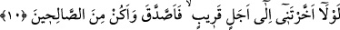

10. Herhangi birinize ölüm gelip de: Rabbim! Beni yakın bir süreye kadar
geciktirsen de sadaka verip iyilerden olsam! demesinden önce, size verdiğimiz
rızıktan harcayın.
Yâni elde etmek bakımından gücünüzün bir etkisi olmadan Allah’ın bir fazlı olarak
size verdiğimiz varlıklarınızın bir kısmını, ölümün belirtilerini gözünüzle görmeden,
işâretlerini müşâhede etmeden önce âhirette yararlanmak üzere sermaye yapmak için
Allah yolunda harcayın.
Keşşâf’ta da belirtildiği gibi, bu emrin zâhirine göre, harcanması istenenlerden
maksad, farz olan zekâttır. Buradaki duruma göre ise bu emrin her çeşit hayırlı
harcamalara genelleştirilmesi uygun olabilir. Âyette, fâil olan ölüm kelimesinden önce
mefül olan “sizden birinize” ifâdesinin önce gelmesi, öncelik verileni önemsemek,
sonra geleni teşvik etmek içindir. Yine âyette, “size ölüm gelmeden evvel” değil de
“herhangi birinize” tarzında buyrulması, ölüm onlara, birer birer gelip hepsini
kuşatacağına işâret etmek içindir. “Yakın süre” ifâdesi, kısa bir an ve çok az başka bir
zaman demektir.
Ebu’l-Leys şöyle demiştir: Ey efendim! Beni dünyaya iâde et ve uzun olmayan bir
zaman için orada bırak, anlamındadır.
Aynü’l-meânî adlı eserde de şöyle denilmiştir: Dünyada te’cil ettiğin gibi, demektir.
“İyilerden olsam” ifâdesi, “sadaka verip” ifâdesinin mahalline atfedilmiştir. Sanki,
“Eğer beni yakın bir süreye kadar geciktirirsen, sadaka veririm” denilmiş gibidir. Bu
ifâdede, sadaka vermenin iyilik ve tâat sebeplerinden olduğu bildirilmektedir. Sadaka
vermemek fesad ve fâsıklık sebebi olduğu gibi.
Sadaka ile hediye arasındaki fark, sadaka merhamet yoluyla ihtiyaç sâhibi olana
verilir. Hediye ise sevgiden dolayı sevgiliye verilir. Bundan dolayıdır ki,
Peygamberimiz (s.a.) farz olsun, nafile olsun sadakayı değil, hediyeyi kabul ederdi.
İbn Abbas (r.a.)’ ın şöyle dediği rivâyet edilmiştir: Zekât verecek kadar malı bulunup
da zekât vermeyen veya kendisini Beytullah’a ulaştıracak kadar imkânı bulup da
haccetmeyen kimse ölüm anında dünyaya dönmek ister. Bunu duyan bir adam, Ey
Abbas’ın oğlu! Allah’tan kork, dünyaya geri dönmek isteyecek olanlar kâfirlerdir, dedi.
İbn Abbas (r.a.), Ben sana şu Kur’ân’ı, şu âyetlerini okuyayım, dedi ve bu sûrenin 9.
ve 10. âyetlerini okudu. Adam: Ey Abbas’ın oğlu! zekâtı gerektiren servet ne kadardır?
dedi. İbn Abbas (r.a.) İkiyüz dirhem veya daha fazla değerdeki servettir, dedi. Soran
adam: “Haccı gerektiren servet nedir?” dedi. İbn Abbas (r.a.): “Hacca gidip gelinceye
dek yeteri kadar azık ve binit” dedi.
O halde bu âyet-i kerime mü’minler ve kıble ehli için inmiş olmakla beraber, kâfirlere
de bir dokundurma vardır. Dünyaya tekrar dönmeyi temennî etmek yalnız kâfirlere
mahsus değildir, kusurlu olan ve taşkınlıkta bulunan herkes bunu temennî edecektir.